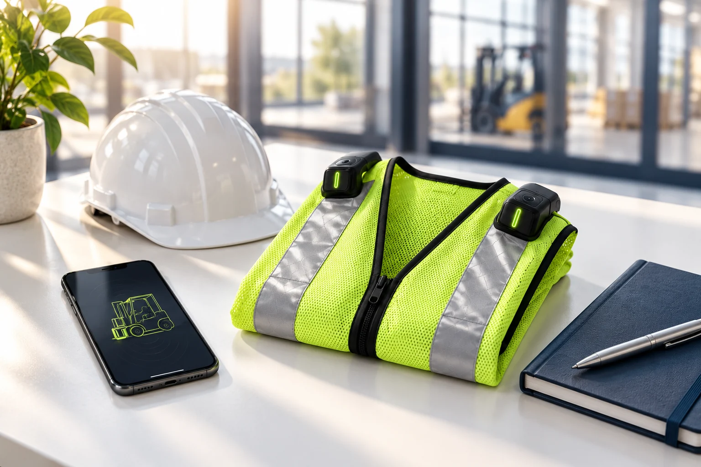
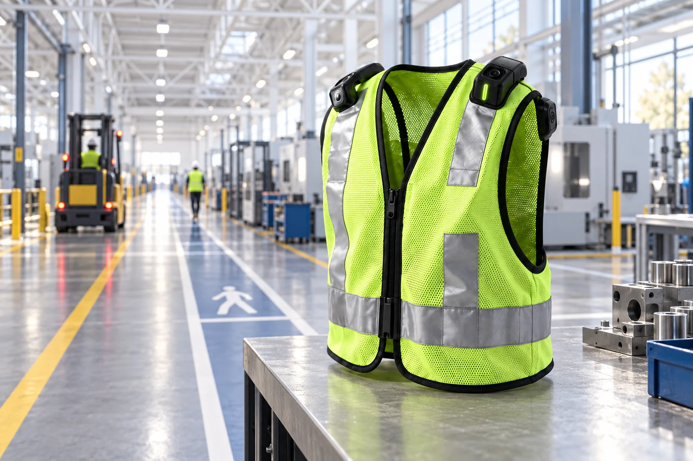

투자
웨어러블 안전장치의 개발 방향, 시장 가정과 사업화 계획을 함께 검토합니다.
투자 문의
WAYS TO WORK TOGETHER
현재 시제품/MVP를 개발하고 있습니다.
관심 분야에 맞춰 이야기를 시작해주세요.
BUILT FOR YOUR WORKPLACE
이동장비와 작업자 동선이 겹치는 제조·산업 현장.
안전 인프라 구축 부담이 큰 중소 제조사업장과
50인 미만 사업장을 우선으로 생각합니다.
센서 단말 4개 + 스마트폰 앱·온디바이스 AI
스마트폰은 고객 보유 기기를 활용합니다.
조끼 등 착용 구조는 현장 조건에 따라 협의합니다.
199만 원 / 세트
추가 약정 없음7.6만 원 / 월·세트
36개월 약정 · 유지관리 포함부가세 별도 · 현재 시제품/MVP 개발 중으로, 가격·제품 구성·공급 조건은 확정 전 기획안입니다.
소개자료에서는 50인 미만 사업장을 대상으로 스마트 안전장비 지원사업 연계를 검토합니다. 공단 판단 금액의 최대 80% 지원이라는 기획 가정이며, 지원품목 등록·성능 요건과 최신 사업 조건을 확인한 뒤 적용해야 합니다. 구독형 적용 여부는 별도 확인이 필요하고, 현재 지원을 보장하지 않습니다.
사업장 단위 계약과 작업자 수에 맞춘 세트 공급을 계획합니다. 안전관리자·구매담당 직접 영업, 산업안전용품 유통사·안전설비 공급업체를 통한 판로를 검토하고 있습니다.
10인 이상 광업·제조업 종사자 304.6만 명 × 사용 대상 10% ≈ 30.5만 명 × 199만 원. 구독 환산 시 연 약 2,780억 원.
목표 1만 5천 사업장 × 평균 41명 × 사용 대상 10% ≈ 6.2만 세트 × 199만 원.
월 200세트(직판 50·구독 150) × 12개월 = 2,400세트. SAM의 약 3.9%. 직판 11.9억 + 구독 누적 8.9억 원.
제공 소개자료 p.8의 추정치. 출처 표기: 국가데이터처 「2024년 광업·제조업조사 결과(잠정)」(2025.12.17). 모집단 73,890개 사업체·304.6만 명, 평균 41명 = 304.6만 ÷ 73,890. 사용 대상 비율 10%, 목표 사업장 1만 5천 곳과 월 판매량은 자체 가정이며 현장 검증 후 보정 예정입니다. 달성 실적이 아닙니다.

FOR MANUFACTURING WORKPLACES
특히 안전 인프라 구축 부담이 큰 중소 제조사업장과 50인 미만 사업장을 우선으로 생각합니다. 사업장 단위 계약과 작업자 수에 맞춘 세트 공급을 계획합니다.
개발 및 실증 계획 확인LET’S MAKE WORK SAFER
투자와 제휴, PoC·현장 실증을 함께할 파트너를 기다립니다.